相关、无关
向量组中含零向量必然线性相关
组中至少存在两个成比例的向量必然线性相关
相关计算
$A(\alpha_1,\alpha_2,\alpha_3…\alpha_s)$ 是否线性相关？
$\Leftrightarrow$ AX=0是否有非零解？(联系克拉默法则)
$\Leftrightarrow$ r(A) < s
特别的，对于n维向量：⭐⭐
- n个n维向量相关 $\Leftrightarrow$ 行列式得0，即|A|=0
- n+1个n维向量必然线性相关
此外，还有以下几何性质
“$\alpha$相关”$\Leftrightarrow$ $\alpha=0$
“$\alpha_1,\alpha_2$相关”$\Leftrightarrow$ $\alpha_1,\alpha_2$共线
存在$\alpha_1=k\alpha_2$
“$\alpha_1,\alpha_2,\alpha_3$相关”$\Leftrightarrow$ $\alpha_1,\alpha_2,\alpha_3$共面
证明、选择
这是难点，重点
证明线性无关
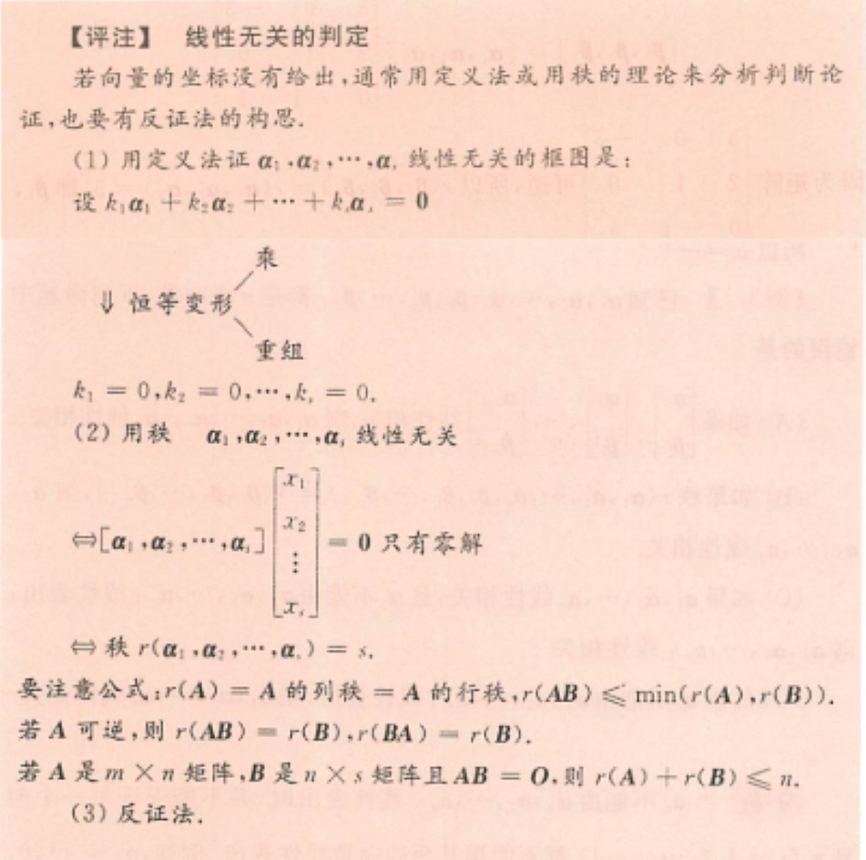
⭐特征值不同的特征向量必线性无关。
此外，不同特征值中如果某一特征值存在“一对多”的关系，这些特征向量也线性无关。即若$A \alpha_1=\lambda_1\alpha_1,A \alpha_2=\lambda_1\alpha_2,A \alpha=\lambda\alpha$，那么$\alpha_1,\alpha_2,\alpha_3$线性无关
恒等变形中乘的思路：
- 利用已知构造出0使得式子变短
- 直接两边乘A，得出式子，然后通过两个式子的加加减减化简
真题&经典例题
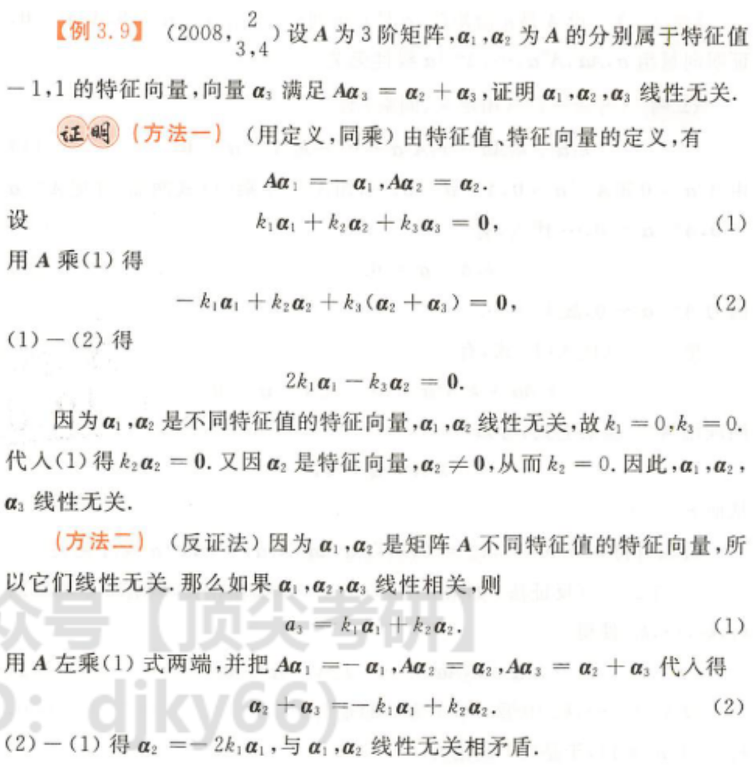
本题第二问“写出和A相似的矩阵”(3分)
分析：$\alpha_1，\alpha_2，\alpha_3$无关，后面出现$A\alpha_1，A\alpha_2，A\alpha_3$想到相似

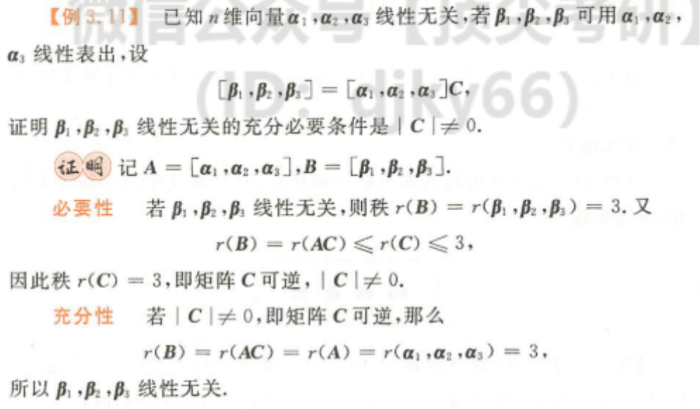
本题可以当作结论使用
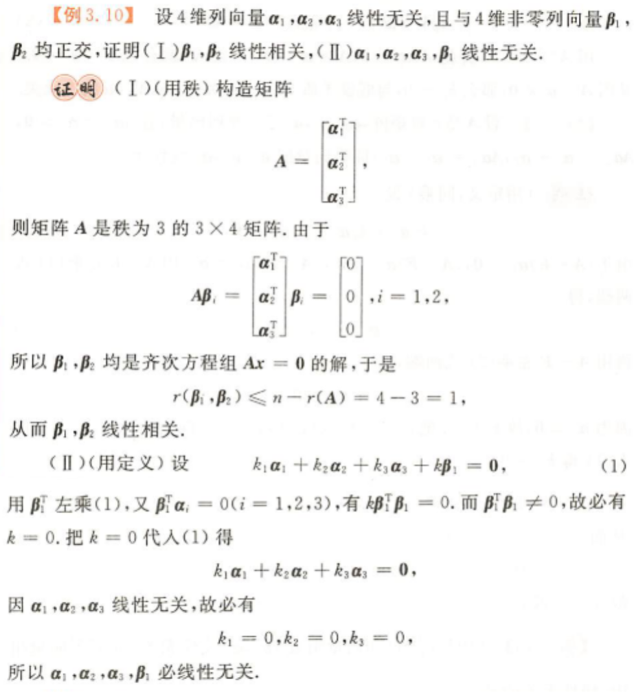
注意等式 $r(\beta_1,\beta_2) ≤ n-r(A)$ 的含义，对于一个齐次方程组AX=0，其未知数为n个，则其线性无关的解有 n-r(A) 个，即所有解的秩 ≤ n-r(A)
线性表出
计算
定理
转化为AX=B后有如下情况(如果含参)

现题型多为两个向量小组互相线性表出的问题
$\alpha_1\alpha_1\alpha_1…\alpha_s$ (1）
$\beta_1 \beta_2 \beta_3 …\beta_t$ (2)
“向量组线性表出”$\rightarrow$ 组中任意向量可以由另一向量组线性表出
“向量组等价” $\rightarrow$ 可互相线性表出
“矩阵等价”$\rightarrow$ 秩相等
真题
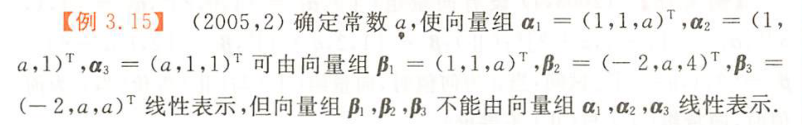
解：（定义法）
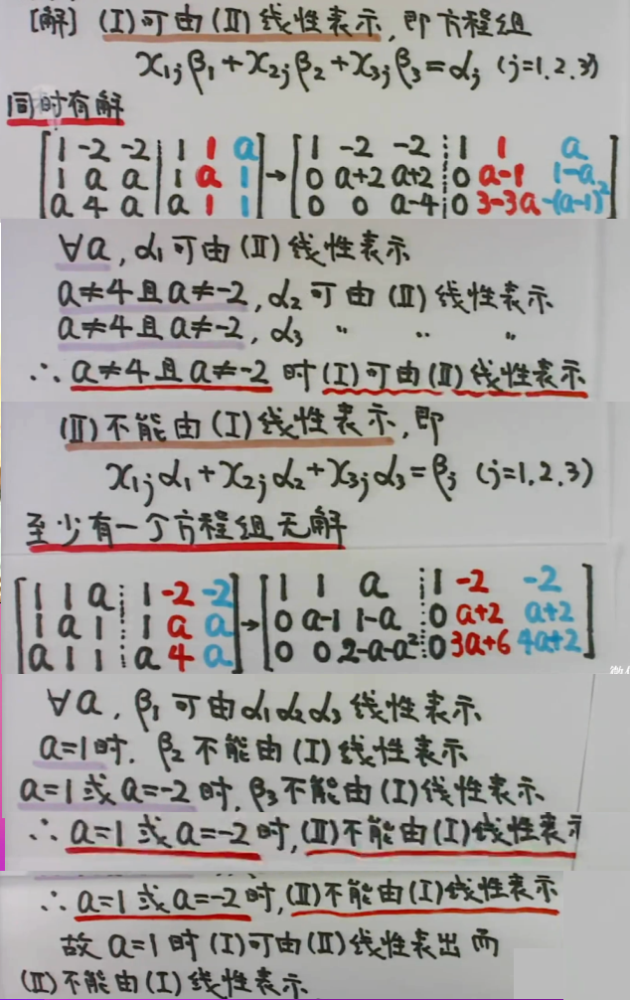
解法二（秩的方法）
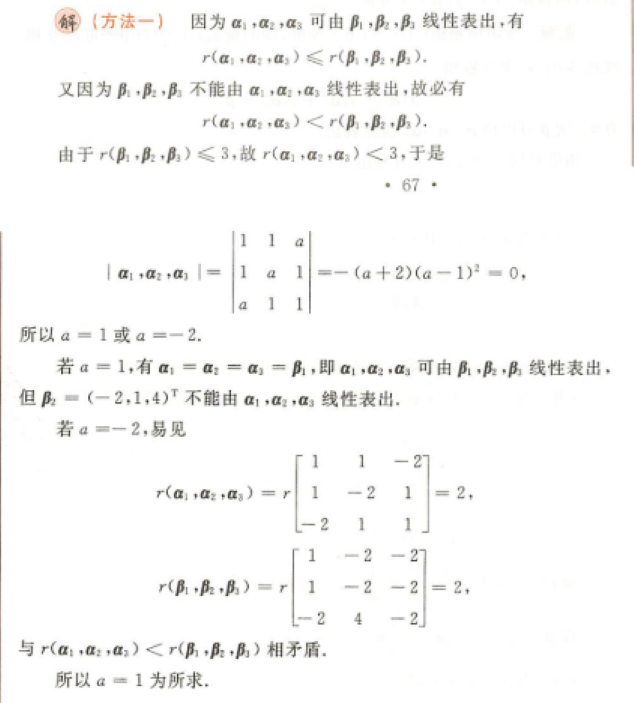
选择、证明
定理&方法⭐⭐⭐
(设A为向量组$\alpha_1\alpha_2…\alpha_s$ ，B为$\beta_1\beta_2…\beta_t$)
子集合相关，整体必相关
低维无关，高维必无关
基础解系求解过程中，先构造1 0/0 1两个无关的低维向量，然后带到方程中求导的另外两个值后，组成的高维向量必然无关。
A线性相关 $\Leftrightarrow $ 存在$\alpha_i$ 可由A中剩余向量线性表出
A线性无关，$A,\beta$线性相关，则$\beta$可以由A线性表出，且 表示方法唯一
多数向量可由少数向量线性表出，多必线性相关
(判断向量个数) A无关，A可由B线性表出，则s ≤ t
A可由B线性表出，则r(A) ≤ r(B)
方法总结🙅
(1) 找出两个条件：向量组A无关，(A,β)相关(定理4)
(2) 构造方程组，证明方程组有界 » r(A)=r(Ā)
(3) 存在等式，找出k≠0，移项，做分母，得到线性表出（证能表出时）
(4) 反证法！！（证不能表出时）
真题&例题
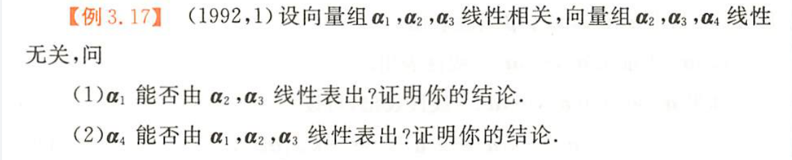
(1)两种方法
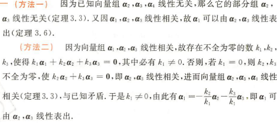
(2)还是两种方法🤓
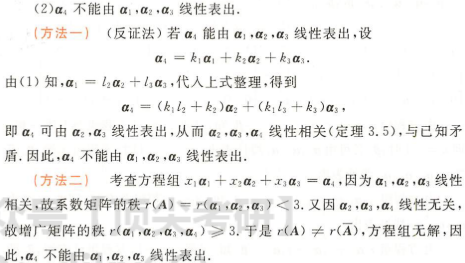
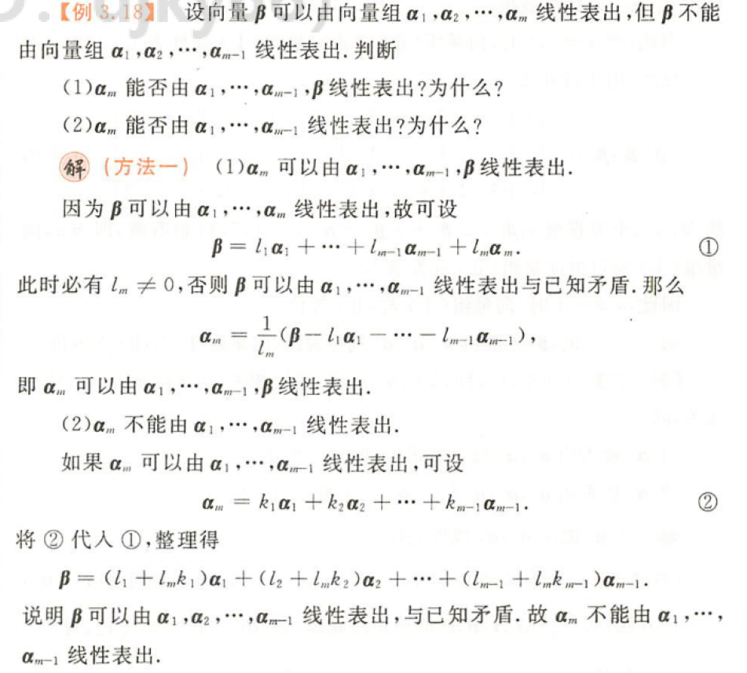
秩
向量组的秩——极大无关组
向量组的极大线性无关组往往是不唯一的，其成员可以不一样，但极大线性无关组中向量的个数是一样的，由此引出向量组秩的概念，向量组的秩为r就是指该向量组的极大线性无关组有r个向量
注意以下几个说法等价：😮
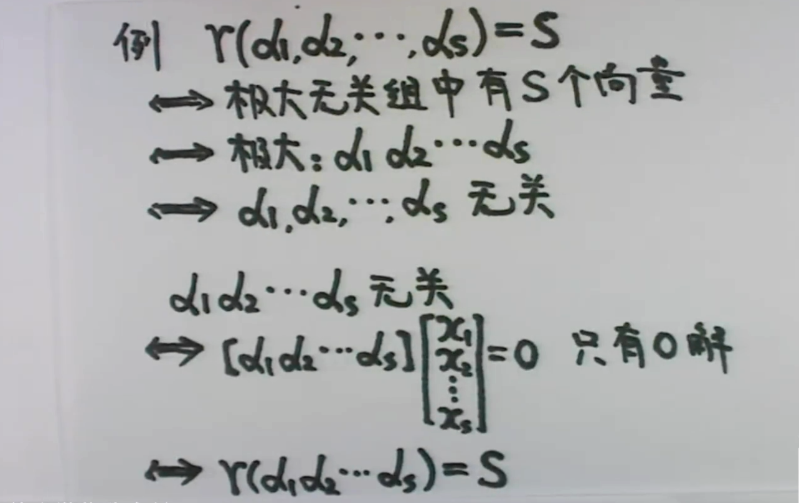
例题
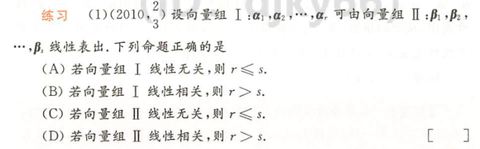
解法(一)——定理6
Ⅰ可以由Ⅱ表出，
则r(Ⅰ) ≤ r(Ⅱ) ≤ s
根据A，若Ⅰ无关，则r(Ⅰ) = r
故 r ≤ s，A说法正确
解法二：定理5推论
Ⅰ可以由Ⅱ表出，Ⅰ无关，则 r ≤ s
本题可以举反例加以说明
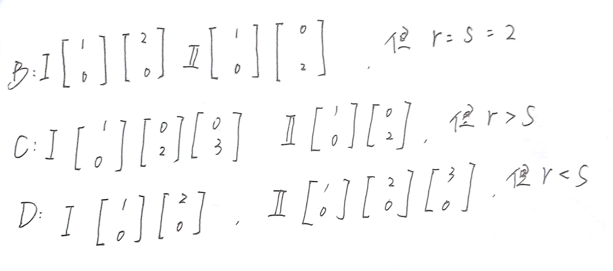
矩阵的秩
前面有涉及，回顾 GO
此外
r(A) = A的列秩 = A的行秩 (概念不同，数值相等)
就是 A的秩等于A的列向量组的秩，那么可以用列向量组的秩求解矩阵的秩，反过来用矩阵的秩可以求得向量组的秩。
⭐经过初等变换矩阵的秩不变，也就意味着，在进行秩的计算时，可以对矩阵既做行变换，又做列变换，这点要区别于方程组计算过程中尽可以做行变换。
公式
$r(A^TA) = r(A)$ （证明过程）
$r(kA) = r(A)$，当k≠0
$r(A+B)≤ r(A)+r(B)$
r(AB)≤ min{r(A),r(B)},A-m×n,B-n×s
A可逆，r(AB)=r(B),r(BA)=r(B)
真题
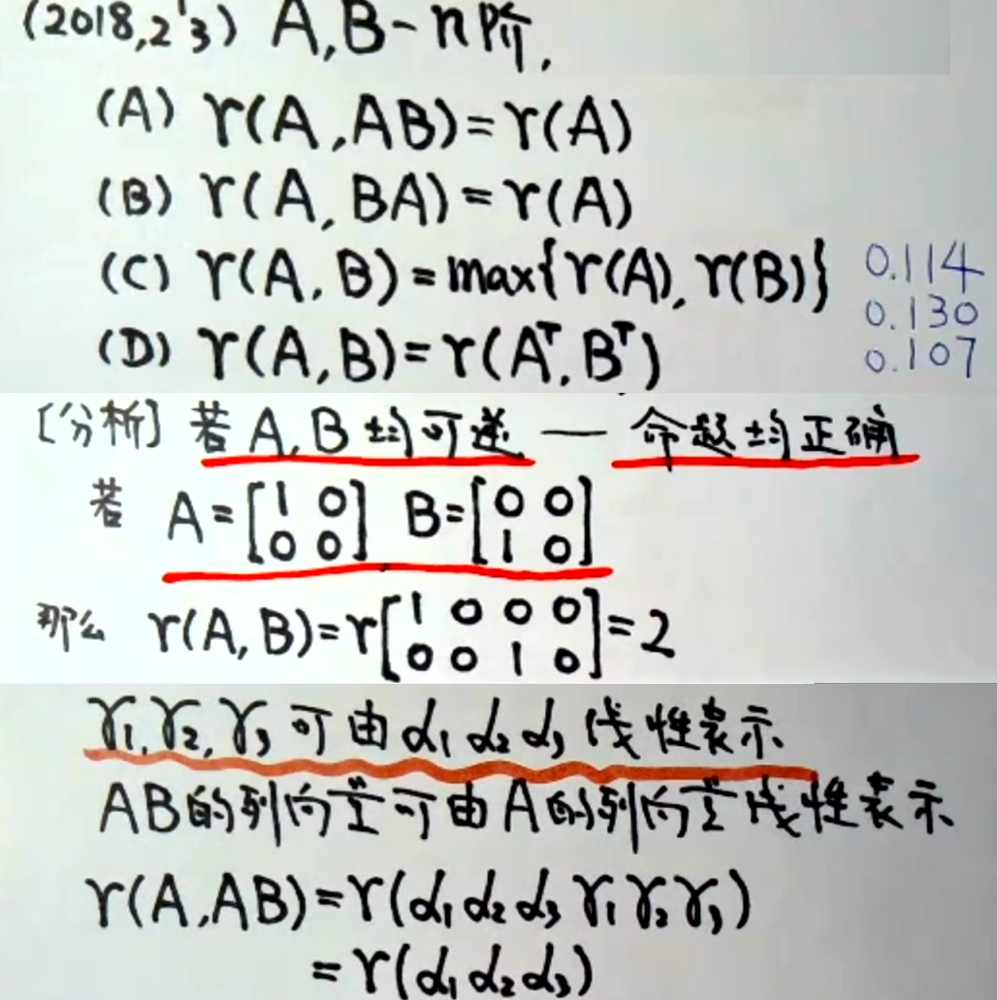
先利用特殊值排除掉简单的CD选项
A选项的判断利用矩阵中AB=C的规律，GO